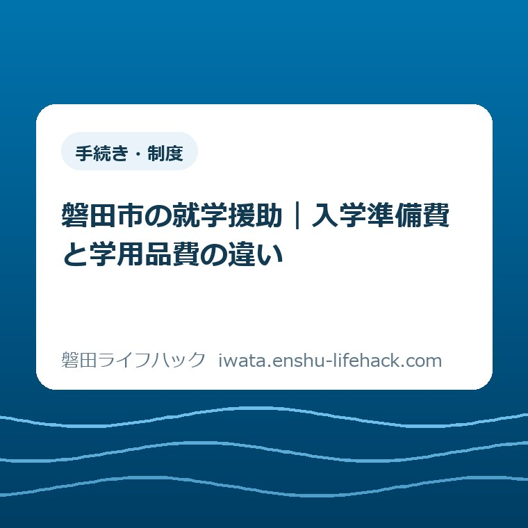
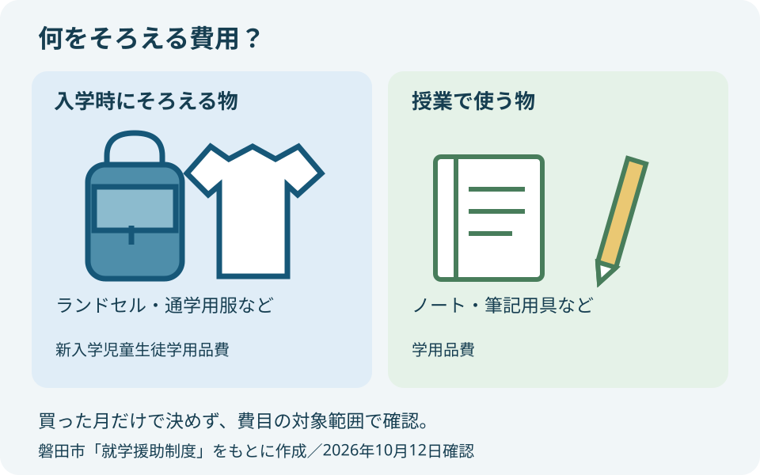
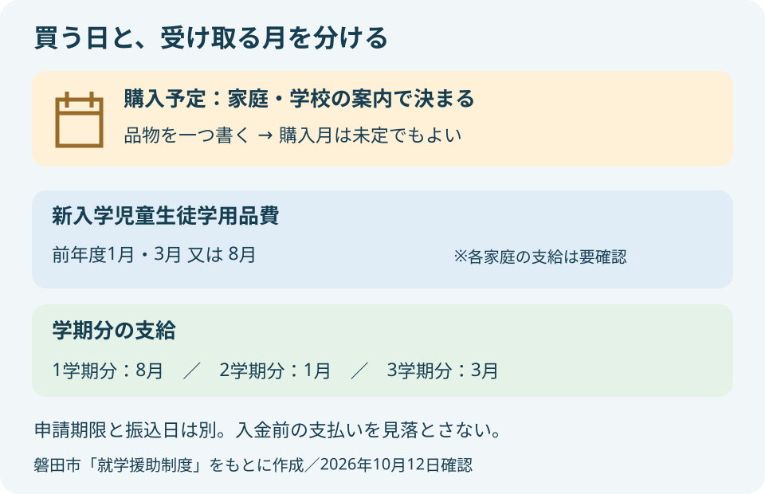

手続き・制度
磐田市の就学援助｜入学準備費と学用品費の違い

この記事の要点
Q. ランドセル代と、入学後のノート代は同じ援助ですか？
A. 対象は世帯条件や認定で変わります。磐田市の新入学児童生徒学用品費はランドセルなど入学時の用品、学用品費はノートなど授業で使う用品が対象です。市の支給時期は新入学費が前年度1月・3月又は8月、学期分が8月・1月・3月。購入日と入金日は別に考え、今日の一歩は購入予定品を一つメモすることです。
入学用品を選ぶ前から、保護者の仕事は始まっている
磐田市の就学援助は、世帯の状況や認定によって利用できる費目が変わります。ランドセルを買う家庭すべてに、同じ金額が自動で振り込まれる仕組みではありません。本記事は、入学時の用品と入学後の学用品を区別するための読み物です。個別の受給可否や振込日は、市の案内で確かめる必要があります。
健診の通知を読み、仕事の予定を動かし、子どもの上履きを用意する。その合間にランドセルの値段と学校の書類も見比べる。入学を控えた保護者は、買い物に出る前から時間を使っています。援助を調べる作業も、その負担の一部です。「制度を読めば済む」で片づけたくありません。
私は大石浩之（磐田市／不動産業）です。家計の予定を組むなら、用品の名前と支払いの順番を一緒に見たいと考えます。この記事では、制度全体の申請手順を並べるより、何の費用なのか、いつのお金なのかを分けます。書類を読む回数を一つ減らすための整理です。
市の制度や相談先を広く探す入口は、就学援助・学校費用の生活案内です。本記事は小学校入学前の購入予定に絞ります。給食費や修学旅行費なども同じ制度に含まれますが、入学用品の予算に混ぜず、必要になった段階で別に確認する考え方です。
新入学児童生徒学用品費と学用品費の違い
磐田市の「就学援助制度」は、入学時に通常必要となる用品を「新入学児童生徒学用品費」、授業などに必要な用品を「学用品費」として分けています。2026年10月12日に公式本文を確認しました。どちらにも「学用品」という文字があるため、短く呼ぶと違いが見えにくくなります。
この記事でいう「入学準備費」は、入学時の買い物を表す生活上の呼び方です。市の費目名は「新入学児童生徒学用品費」です。「新入学学用品費」と探している場合も、公式表ではこの長い名前の行を見ると、ランドセルなどの対象例にたどり着けます。
| 比較すること | 新入学児童生徒学用品費 | 学用品費 |
|---|---|---|
| 費用の目的 | 入学するときに通常必要な学用品・通学用品 | 教材や特別活動の学習に必要な学用品 |
| 市が示す例 | ランドセル、通学用服、雨傘など | ノート、筆記用具、実験学習材料など |
| 家計で分ける欄 | 入学時にそろえる物 | 授業で使い、補充する物 |
| 確認の注意 | 購入額全額の払い戻しとは決めつけない | 買った月にその都度振り込まれるとは考えない |
ランドセルは毎日の登下校で使う物ですが、市の例では新入学の費目に入ります。一方、ノートは入学前に買っておくこともあります。それでも、購入した日が3月だったという理由だけで、新入学の費目に振り分けることはできません。見るべき軸は、買った月だけでなく費目の対象範囲です。
雨傘のように、別の費目にも名前が出る用品があります。市は「通学用品費」の対象を小中学校の第2学年以上としています。物の名前が同じでも、学年や費目が違えば確認する行が変わります。ここは意外に見落としやすい点です。「傘だからどの学年も同じ」と読み替えないでください。
市は費用の一部を援助する制度と説明しています。用品の対象例が載っていることと、店で支払った金額がそのまま戻ることは別です。ブランドや価格を決める前に、認定と支給額の案内を確認する余地を残してください。この記事では、個々の商品の購入可否や補填額までは判定しません。

支給時期は、用品を買う日と分けて読む
磐田市が示す支給時期は、新入学児童生徒学用品費が「前年度1月・3月又は8月」です。学期分は、1学期分が8月、2学期分が1月、3学期分が3月とされています。入学の費目に8月という選択肢もあるため、名前に「新入学」とあっても、全員が入学前に受け取れるとは読めません。
| 区分 | 市の支給時期 | 家計上の確認 |
|---|---|---|
| 新入学児童生徒学用品費 | 前年度1月・3月又は8月 | 自分の申請・認定でどの時期になるか |
| 1学期分 | 8月 | 4月からの購入と入金を別欄にする |
| 2学期分 | 1月 | 学期中の補充費を見落とさない |
| 3学期分 | 3月 | 年度末の入金案内を確認する |
市は、学期ごとに保護者口座へ支給すると説明しています。年度途中の申請では、月割計算などを行う旨も記載されています。年度の初めから申請した場合と、途中で申請した場合を、同じ受取額として家計表へ置かないようにしたいところです。
私が家計整理のために勧めるのは、「買う予定の日」と「入金が確認できた日」を別の欄にする方法です。たとえば、ランドセルを買う月は決まっていても、援助の入金月は未確認という状態があります。その場合は未確認と書けば十分です。予定の収入を確定したお金として数えないための工夫です。
仮に家族の購入予定が2月で、支給について3月の案内を受けたなら、2月の支払いは先に発生します。これは説明用の例で、実際の支給月を示すものではありません。年単位で援助と支出が釣り合って見えても、支払いの時点で手元のお金が足りるかは別に確かめる必要があります。
中学校入学予定の小学6年生については、準要保護認定中の場合に限り、入学前に新入学児童生徒学用品費を支給すると市は説明しています。この記載を、そのまま新小学1年生の条件に当てはめないでください。きょうだいがいる家庭でも、それぞれの学年の案内を読み分けます。
名前の似た資金を見かけたときは、修学資金と就学支度資金を支払時期で比べた記事も参考になります。そちらは貸付の話です。本記事の就学援助とは別の制度なので、受取予定や返済の有無を同じ欄にまとめないようにしてください。

10〜11月の健診通知と、2027年度の申請案内
磐田市の「就学時健康診断」は、令和9年度、つまり2027年度に小学校へ入学予定の子どもを対象としています。2026年8月19日更新の公式ページは、健診を10月から11月に実施すると案内しています。2026年秋に受ける健診と、2027年度の入学準備がつながる時期です。
市の「就学援助制度」の現在の本文は、2026年10月1日更新です。令和9年度新小学1年生の申請について、案内通知を就学時健診の通知に同封したと記載されています。案内を持っていない場合の確認先は、通う予定の小学校または教育総務課です。
同ページに記載された令和9年度新小学1年生の申請時期は、令和9年4月30日までです。西暦では2027年4月30日になります。ただし、この日付は申請の案内であり、入学前に支給を受けるためのすべての条件や、各家庭の振込日を表すものではありません。手元の通知の支給条件も合わせて確認してください。
市のページには令和8年度在校生の申請案内も載っています。2027年4月に入学する子どもの準備で、2026年度の在校生向けフォームや様式だけを見て進めないよう、見出しの年度と対象学年を確かめます。ページを開いた日が同じでも、載っている申請案内の対象は一つとは限りません。
健診の日程や当日の持ち物は、2026年の就学時健康診断の記事に整理しています。健診を受ける準備と、援助を申し込む準備は別に確認してください。同じ封筒に案内があっても、受診しただけで就学援助の申請まで済むとは考えないでください。
世帯の条件と書類は、用品の仕分けとは別に確認する
磐田市の就学援助制度は、対象となる保護者と世帯条件を定めています。公式表では、この記事で比べる二つの費目は準要保護の欄に対象の印があります。「就学援助の対象」という一つの言葉だけで、全費目を一律に受け取れると判断しない読み方が必要です。
準要保護の条件として、市は世帯全員の市民税が非課税の場合や、児童扶養手当の受給・受給予定などを挙げています。列挙した条件以外の理由で経済的に困っている場合も記載されています。自分が分かる条件だけを見て、相談する余地まで閉じてしまう必要はありません。
ただし、家計が苦しいという実感だけで認定結果を予測することもできません。私から所得の境目や必要書類を家庭ごとに断定することはしません。世帯の状況を伝えたうえで、対象年度の通知に沿って、市に確認する範囲を決めてください。
書類を読み直す負担を減らすなら、購入予定のメモに「申請の案内を持っているか」という欄を足す方法があります。これは私の整理案です。手元にない書類を記憶で埋めるより、「案内なし」「年度を確認中」と残した方が、問い合わせで同じ説明を繰り返さずに済みます。
領収書や学校からの購入案内は、家計の記録として一緒に残しておくと見返せます。ただし、それをすべて申請の必須添付書類と呼ぶことはできません。何を提出するかは公式の申請案内で確認し、家で保管する資料と提出を求められる資料を分けてください。
学校費用以外の支払いも重なり、入金までの家計が苦しい場合は、生活費に困ったときの相談先案内も入口になります。援助の予定月を待つことだけが選択肢ではありません。利用できる支援はそれぞれの条件で変わるため、窓口で家庭の状況を伝えることになります。
良い点——入学時と通い続ける費用を分けている
私は、磐田市が新入学の用品と日々の学用品を別に示している点を評価します。ランドセルをそろえたら教育費の準備が終わるわけではありません。入学時のまとまった買い物と、ノートなどを使い続ける支出の両方を考える入口になります。
支給時期が月で示されていることも、家計の予定を立てる材料になります。認定後の個別案内は必要ですが、学期分の支給を毎月の収入と同じようには扱えないことが分かります。費目だけを読んだ場合より、入金を待つ期間まで考えられます。
新小学1年生向けの援助案内を健診通知に同封する方法にも、私は意味があると考えます。健診とお金の準備を別々に探し始める手間を減らせるからです。保護者が制度名を正確に知らなくても、入学の準備をする中で案内に触れる機会になります。
注文したい点——費目の長さより、財布から出る順番を
私が案内の読みやすさに注文したいのは、支給月と購入時期の関係です。「新入学児童生徒学用品費」という名前だけでは、入学前に必ず入金されるようにも受け取れます。8月の支給もあると分かる位置に、申請時期ごとの読み方が添えられていると、家計の見込み違いを減らせると思います。
申請の期限と、入学前の支給に関わる確認は、見出しを分けて伝えてほしいところです。4月30日という日付だけを家族の予定表へ写すと、入学前の買い物との関係が残りません。保護者が知りたいのは、間に合う申請かという話と、支払い前に受け取れるかという話の両方です。
これは窓口の担当者個人への注文ではありません。複数の年度、学年、費目が一つのページに並ぶと、読み手が自分の欄を探す負担が増えるという話です。家庭側で内容を翻訳し直す作業は、できるだけ小さくしたいと私は考えます。
対案・結論——今日の一歩は購入予定品を一つメモする
入学費用の整理で今日行うことは、購入予定品を一つメモするだけです。「ランドセル」でも「ノート」でも構いません。家中の書類を整理し切ることや、すべての金額を埋めることを、最初の目標にしなくてよいと私は考えます。
メモの形は「品物／使う場面／買う予定の月／支給の確認状況」です。たとえば「ランドセル／入学時の通学／購入月は未定／新入学費の通知を確認中」と書けます。金額が分からなければ空欄でよく、希望する価格を援助額として書き込まないことだけ意識してください。
このメモは申請書の代わりではありません。家族で購入を相談するときや、市に支給時期を尋ねるときの手元の資料です。問い合わせるなら、「2027年4月に小学校入学予定です。手元の案内で申請した場合、新入学費はいつの支給になりますか」と、年度と費目を一緒に伝えると質問を絞れます。
就学援助について市が案内している窓口は、学校または教育総務課です。教育総務課の電話は0538-37-4821です。新小学1年生で案内を持っていない場合は、通う予定の小学校または同課に問い合わせるよう記載されています。健診そのものの相談窓口と取り違えず、援助の件と伝えてください。
大石の視点——援助があることと、買えることは別だ
私は、援助の名前を覚えるより、家計から先に出るお金を見る方を優先します。制度があっても、入金より前に支払う日が来るなら、その期間の段取りが要るからです。家計の助けになるかは、金額だけでなく受け取る時期まで含めて考える。ここは言い切っておきたいところです。
私が購入予定表を前にするなら、最初にランドセルの価格欄へ目が行くと思います。それでも、一度手を止めて「いつ払うのか」の欄を先に作りたい。これは相談を受けた実話ではなく、私の考える整理の順番です。安く買うことだけを目標にすると、入金までの支払いが抜け落ちるからです。
どこまで買い物を待った方がよいかは、私にも一律には決められません。子どもの希望、学校の指定、家計の余裕で答えが違います。だから購入を急がせる結論にはしません。まだ決まっていない物を未定と残し、確かめたい費目を一つに絞るところからでよいと考えます。
よくある質問
ランドセル代は、学用品費として確認すればよいですか？
磐田市の公式表では、ランドセルは「新入学児童生徒学用品費」の対象例です。「学用品費」はノートや筆記用具など、学習に必要な用品の費目です。名称が似ていますが別の行で確認します。対象例にあることは購入額全額の返金を意味せず、認定条件や支給額は対象年度の市の案内で確かめてください。
就学時健診を受ければ、就学援助も受けられますか？
健診の受診だけで援助を受けられるとは扱えません。就学援助には世帯条件と申請の確認が必要です。市は2027年度新小学1年生向けの案内を健診通知に同封したと説明しています。健診と援助の書類を別に読み、案内がなければ通う予定の小学校または教育総務課へ問い合わせてください。
入学前に必ず新入学費が振り込まれますか？
全員が入学前に受け取れるとは断定できません。市の支給時期は前年度1月・3月又は8月です。2027年度新小学1年生の申請期限は2027年4月30日と案内されていますが、期限と振込日は別です。自分の申請時期や認定でどの支給になるかを、手元の通知と市の窓口で確認してください。
制度や日程は変更される場合があります。最後は磐田市公式の「就学援助制度」で、対象年度・費目・支給時期を確認してください。今日書いた購入予定品一つのメモを、家族と公式案内をつなぐ手がかりにしてもらえればと思います。
参考にした公式情報
- 就学援助制度／磐田市（2026年10月1日更新、2026年10月12日確認）
- 就学時健康診断／磐田市（2026年8月19日更新、2026年10月12日確認）
最終確認日：2026-10-12 ／ 本記事は公表情報と執筆者の見解を分けて記載しています。制度・数値・公開状況は変更される場合があるため、最新情報は磐田市公式ページでご確認ください。